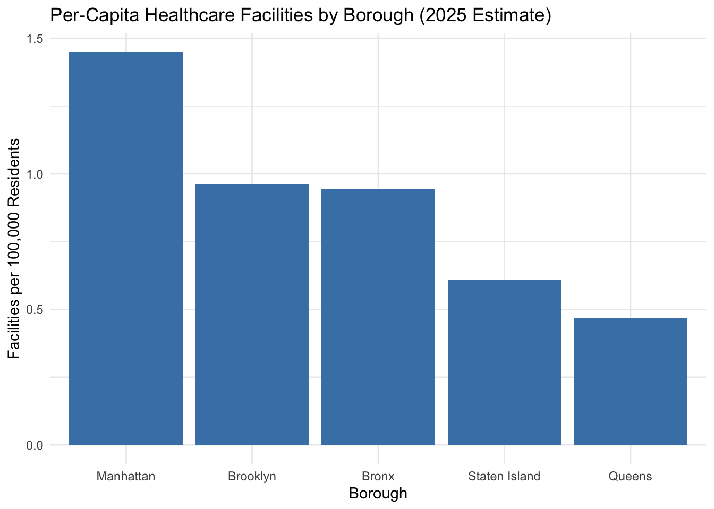

Show code
library(dplyr)
library(readr)
hospital <- read_csv("hospital_20251026.csv")Imani Cooper
December 18, 2025
Access to healthcare facilities is a central component of population health and a key determinant of health inequality across urban environments. In dense metropolitan regions such as NYC, where more than eight million residents are dispersed across five boroughs with diverse socioeconomic characteristics, the spatial distribution of hospitals and acute care centers directly influences the accessibility of essential medical services. Geographic proximity to healthcare resources can shape an individual’s likelihood of receiving timely emergency treatment, preventive care, and specialized services. As a result, measuring how healthcare facility availability varies across neighborhoods is critical for understanding—and ultimately addressing—structural inequities in health outcomes.
Our group project collectively examines the broader question:
This larger research goal requires multiple analytic components, including spatial mapping, socioeconomic indicator integration, and facility availability measurement. My individual contribution addresses one central piece of this broader question: baseline capacity and population adjusted facility availability.
Specifically, my individual research question is:
My goal is to quantify the number of hospitals relative to borough populations to assess whether facility availability is proportionate to population needs or whether certain boroughs are comparatively underserved. Per capita metrics allow us to compare boroughs of differing population sizes on equal footing.
Although my original research question included the possibility of comparing availability across ZIP codes, this level of granularity was ultimately not feasible due to the structure of the available NYC Open Data facility datasets. The “NYC Hospitals” dataset do not include ZIP codes as variables, preventing analysis at more detailed sub borough levels. For this reason, the analysis presented here focuses exclusively on borough level differences.
Nevertheless, these findings play a vital role in our group’s larger study. Borough level inequalities provide the first indication of geographic variations in healthcare capacity. These aggregate differences then serve as a foundation upon which census tract level analyses and socioeconomic comparisons are built. For instance, boroughs with lower per capita facility availability may also contain census tracts with high poverty rates, low insurance coverage, or higher proportions of marginalized racial and ethnic groups relationships that other group members investigate more deeply.
This report proceeds with a detailed description of the data sources, data processing workflow, analytical methods, results, and implications. A reproducible research approach is used throughout, with all R code included in executable form. This ensures transparency, replicability, and alignment with course expectations for computational research.
This analysis draws from two datasets, one sourced from the NYC Open Data Portal (https://opendata.cityofnewyork.us/), and the other one borough level population dataset from the NYC Department of City Planning for population projections. All datasets were downloaded in October 2025 and stored locally in CSV format. Below I describe each dataset and how it contributed to the analysis.
The main facility dataset used in this analysis is the NYC Open Data “Hospital” dataset (downloaded October 26, 2025). This dataset includes 78 healthcare facilities located across New York City and contains information on facility type, borough, facility name, phone number, and geographic location. Because ZIP code information was not available in this dataset, all analysis is conducted at the borough level.
Population data were obtained from the “NYC Population Since 1950” dataset, which provides borough level population counts and projections from 1950 through 2040. This dataset includes: - 2020 Census population values - 2030 population projections
These population values served as endpoints to estimate borough populations in 2024 and 2025, the years most relevant to the facility dataset snapshot.
Because population growth between 2020 and 2030 is assumed to be approximately linear, this offers a reasonable approximation for mid decade estimates.
This section describes the technical workflow used to clean, merge, and analyze the data. All code is included as required for a reproducible research workflow.
To get a glimpse of the data:
Hospitals
Rows: 78
Columns: 6
$ `Facility Type` <chr> "Child Health Center", "Acute Care Hospital", "Child H…
$ Borough <chr> "Manhattan", "Queens", "Brooklyn", "Queens", "Bronx", …
$ `Facility Name` <chr> "La Clinica Del Barrio", "Elmhurst Hospital Center", "…
$ `Cross Streets` <chr> NA, NA, "W. 22nd St. & W. 23rd St.", NA, "between Morr…
$ Phone <chr> "212-410-7940", "718-334-4000", "718-946-3400", "718-8…
$ `Location 1` <chr> "POINT (-73.932667945174 40.798205044469)", "POINT (-7…# A tibble: 5 × 2
Borough num_facilities
<chr> <int>
1 Brooklyn 26
2 Manhattan 24
3 Bronx 14
4 Queens 11
5 Staten Island 3To show that filter by zip code was not operable:
glimpse of the nyc population across all boroughs:
Rows: 6
Columns: 22
$ `Age Group` <chr> "Total Population", "Total Population…
$ Borough <chr> "NYC Total", "Bronx", "Brooklyn", "Ma…
$ `1950` <dbl> 7891957, 1451277, 2738175, 1960101, 1…
$ `1950 - Boro share of NYC total` <chr> "100%", "18.39%", "34.7%", "24.84%", …
$ `1960` <dbl> 7781984, 1424815, 2627319, 1698281, 1…
$ `1960 - Boro share of NYC total` <chr> "100%", "18.31%", "33.76%", "21.82%",…
$ `1970` <dbl> 7894862, 1471701, 2602012, 1539233, 1…
$ `1970 - Boro share of NYC total` <chr> "100%", "18.64%", "32.96%", "19.5%", …
$ `1980` <dbl> 7071639, 1168972, 2230936, 1428285, 1…
$ `1980 - Boro share of NYC total` <chr> "100%", "16.53%", "31.55%", "20.2%", …
$ `1990` <dbl> 7322564, 1203789, 2300664, 1487536, 1…
$ `1990 - Boro share of NYC total` <chr> "100%", "16.44%", "31.42%", "20.31%",…
$ `2000` <dbl> 8008278, 1332650, 2465326, 1537195, 2…
$ `2000 - Boro share of NYC total` <chr> "100%", "16.64%", "30.78%", "19.2%", …
$ `2010` <dbl> 8242624, 1385108, 2552911, 1585873, 2…
$ `2010 - Boro share of NYC total` <chr> "100%", "16.8%", "30.97%", "19.24%", …
$ `2020` <dbl> 8550971, 1446788, 2648452, 1638281, 2…
$ `2020 - Boro share of NYC total` <chr> "100%", "16.92%", "30.97%", "19.16%",…
$ `2030` <dbl> 8821027, 1518998, 2754009, 1676720, 2…
$ `2030 - Boro share of NYC total` <chr> "100%", "17.22%", "31.22%", "19.01%",…
$ `2040` <dbl> 9025145, 1579245, 2840525, 1691617, 2…
$ `2040 - Boro share of NYC total` <chr> "100%", "17.5%", "31.47%", "18.74%", …NYC population of 2020 and 2030 only:
# A tibble: 5 × 3
Borough `2020` `2030`
<chr> <dbl> <dbl>
1 Bronx 1446788 1518998
2 Brooklyn 2648452 2754009
3 Manhattan 1638281 1676720
4 Queens 2330295 2373551
5 Staten Island 487155 497749Population data frame to get estimate of 2024 and 2025:
Combined with the population data (per 100,000 residents/facilities/borough) to give a view of availabilty.
population_data <- data.frame(
Borough = c("Bronx", "Brooklyn", "Manhattan", "Queens", "Staten Island"),
Pop_2024 = c(1446788 + (1518998 - 1446788) * 4/10,
2648452 + (2754009 - 2648452) * 4/10,
1638281 + (1676720 - 1638281) * 4/10,
2330295 + (2373551 - 2330295) * 4/10,
487155 + (497749 - 487155) * 4/10),
Pop_2025 = c(1446788 + (1518998 - 1446788) * 5/10,
2648452 + (2754009 - 2648452) * 5/10,
1638281 + (1676720 - 1638281) * 5/10,
2330295 + (2373551 - 2330295) * 5/10,
487155 + (497749 - 487155) * 5/10)
)
facilities_per_capita <- facilities_by_borough %>%
left_join(population_data, by = "Borough") %>%
mutate(facilities_per_100k_2024 = (num_facilities / Pop_2024) * 100000,
facilities_per_100k_2025 = (num_facilities / Pop_2025) * 100000) %>%
arrange(desc(facilities_per_100k_2025))
facilities_per_capita# A tibble: 5 × 6
Borough num_facilities Pop_2024 Pop_2025 facilities_per_100k_2024
<chr> <int> <dbl> <dbl> <dbl>
1 Manhattan 24 1653657. 1657500. 1.45
2 Brooklyn 26 2690675. 2701230. 0.966
3 Bronx 14 1475672 1482893 0.949
4 Staten Island 3 491393. 492452 0.611
5 Queens 11 2347597. 2351923 0.469
# ℹ 1 more variable: facilities_per_100k_2025 <dbl>Visuals of available facilities per 100,000 residents in nyc:
library(ggplot2)
ggplot(facilities_per_capita, aes(x = reorder(Borough, -facilities_per_100k_2025), y = facilities_per_100k_2025)) +
geom_col(fill = "steelblue") +
labs(title = "Per-Capita Healthcare Facilities by Borough (2025 Estimate)",
x = "Borough",
y = "Facilities per 100,000 Residents") +
theme_minimal()
This reveal substantial differences in per-capita healthcare facility availability across NYC’s five boroughs:
library(knitr)
facilities_per_capita %>%
select(Borough, num_facilities, Pop_2024, facilities_per_100k_2024) %>%
mutate(
Pop_2024 = round(Pop_2024),
facilities_per_100k_2024 = round(facilities_per_100k_2024, 2)
) %>%
kable(
caption = "Table 1. Per-Capita Healthcare Facility Availability by Borough (2024 Estimates)",
col.names = c("Borough", "Facilities", "Population (2024)", "Facilities per 100,000 Residents")
)| Borough | Facilities | Population (2024) | Facilities per 100,000 Residents |
|---|---|---|---|
| Manhattan | 24 | 1653657 | 1.45 |
| Brooklyn | 26 | 2690675 | 0.97 |
| Bronx | 14 | 1475672 | 0.95 |
| Staten Island | 3 | 491393 | 0.61 |
| Queens | 11 | 2347597 | 0.47 |
The disparities are striking. Manhattan has roughly three times as many hospitals per-capita as Queens and more than double Staten Island’s rate.
The visualization underscores three tiers of access:
Tier 1: Manhattan
High facility density, likely due to medical centers, teaching hospitals, and specialized institutions.
Tier 2: Brooklyn & Bronx
Middle range of availability, yet still below Manhattan by a significant margin.
Tier 3: Staten Island & Queens
Lowest per-capita access, suggesting potential geographic barriers.
This analysis reveals a meaningful pattern in the geography of hospital availability across NYC. Manhattan stands out as a medical hub, containing a high concentration of hospitals relative to its population. The Bronx and Brooklyn have similar mid-range access levels, but still fall below Manhattan’s density. Queens and Staten Island appear comparatively underserved, suggesting greater distance to care for many residents.
Connection to Group Question:
For our group’s larger analysis of healthcare access at the census tract level, these borough level disparities provide critical context. Tracts within boroughs that already show low per-capita facility availability may face compounding disadvantages.
Queens despite being the second largest borough by population, has the lowest facility density. This may translate into longer travel times, fewer specialized services, and higher burden on existing facilities.
Staten Island geographically isolated, shows similar limitations.
Bronx tracts may have moderate facility availability, but the borough’s high poverty rate and greater health burden suggest additional inequities beyond geographic metrics.
These findings underscore the importance of integrating socioeconomic data such as income, race, education, and insurance coverage to assess whether disadvantaged populations are disproportionately located in areas with fewer healthcare resources.
This analysis demonstrates that healthcare facility availability is not evenly distributed across New York City. Manhattan has the highest per capita availability of hospitals, while Queens and Staten Island have markedly lower access. These disparities have potential implications for emergency response times, preventive care access, and overall health outcomes.
While this individual report is limited to borough level analysis due to dataset constraints, it establishes a foundational understanding of geographic variation that informs the broader group project. Future work should incorporate:
Census tract level socioeconomic indicators
Travel time or distance to provider models
Facility type granularity (urgent care, community health centers, specialty hospitals)
Understanding healthcare access requires both macro and micro level perspectives. This report provides the macro level baseline necessary for assessing equity across NYC’s diverse communities.
Imani Cooper